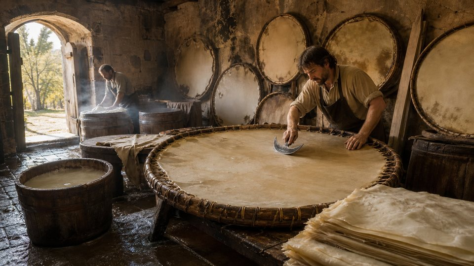
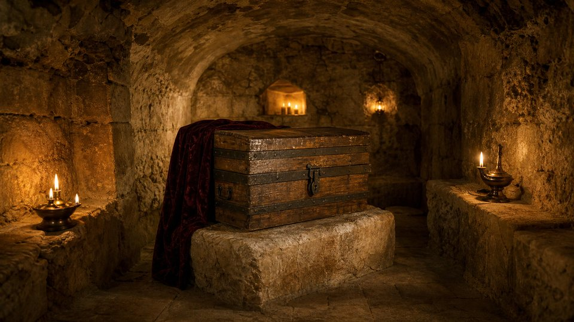
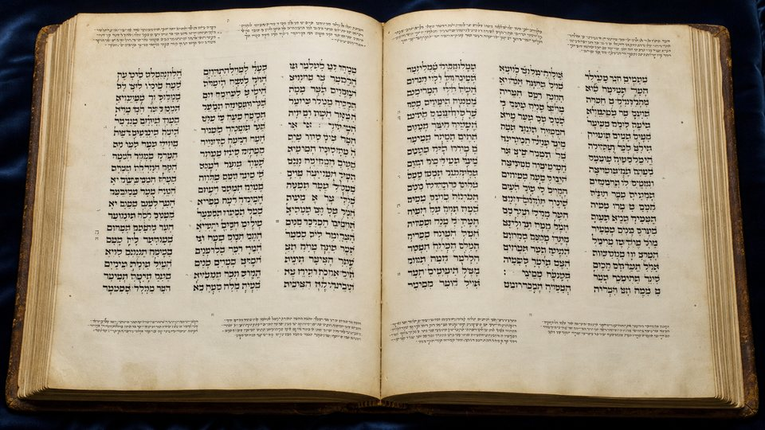

גָּחוֹן
« ventre », Lévitique 11:42
Le Talmud situe ici le milieu des lettres de la Torah : le vav de ce mot, écrit en grand dans les rouleaux.
Vᵉ s. av. J.-C. – 1008 ap. J.-C.
Esdras, les scribes d'Israël, puis les massorètes de Tibériade : des siècles de vigilance pour fixer chaque lettre.
Copier l'Écriture n'était pas un métier comme un autre. C'était un service sacré, encadré par des règles précises, où chaque lettre comptait.
וְהוּא־סֹפֵר מָהִיר בְּתוֹרַת מֹשֶׁה אֲשֶׁר־נָתַן יְהוָה אֱלֹהֵי יִשְׂרָאֵל
« Il était un copiste habile dans la loi de Moïse, que Jéhovah, le Dieu d'Israël, avait donnée. »
Esdras 7:6
Après le retour de l'exil à Babylone (538 av. J.-C.), le prêtre Esdras devient la figure du scribe, en hébreu sofer (סֹפֵר, « celui qui écrit, qui compte »). Selon Néhémie 8, il lit la Loi du matin jusqu'à midi, et les Lévites « en donnaient le sens » pour que tous comprennent.
Après lui, les soferim recopient, enseignent et vérifient le texte. Le Talmud explique leur nom ainsi : « on les appelait soferim parce qu'ils comptaient toutes les lettres de la Torah » (Qiddouchin 30a).
Le rouleau est fait de parchemin d'un animal pur, préparé spécialement pour l'Écriture.
Avant d'écrire, le copiste raye légèrement le parchemin pour guider chaque ligne.
Préparée selon une recette fixe, elle doit résister au temps sans pâlir.
Le scribe regarde son modèle, prononce chaque mot à voix haute, puis l'écrit.
Deux lettres ne doivent jamais se toucher : chacune est entourée de parchemin.
Le copiste se concentre avant d'écrire יהוה, Jéhovah. Une faute dans le Nom ne s'efface pas : la feuille est remplacée.
Selon le Talmud (Menahot 29b), au-delà de quelques fautes par colonne, le rouleau n'est plus corrigé mais retiré.
Les copies usées ou fautives ne sont pas jetées : elles sont mises en réserve, puis enterrées avec respect.

Leur nom vient de massorah (מָסוֹרָה), « la tradition transmise ». Sans changer une seule consonne, ils ont fixé la prononciation, la lecture chantée et le décompte du texte.
Au bord du lac de Galilée, plusieurs générations de savants se succèdent. La famille Ben Asher domine : Moïse ben Asher, puis son fils Aaron ben Asher (Xᵉ siècle), dont le travail deviendra la norme. D'autres systèmes existaient (babylonien, palestinien), mais c'est la vocalisation tibérienne qui s'est imposée et que l'on imprime encore aujourd'hui.
Genèse 1:1, tel que l'a fixé le texte massorétique. Ajoutez les couches une à une.
בראשיתבְּרֵאשִׁיתבְּרֵאשִׁ֖יתbereshitAu commencementבראבָּרָאבָּרָ֣אbaracréaאלהיםאֱלֹהִיםאֱלֹהִ֑יםʾelohimDieuאתאֵתאֵ֥תʾet(marque du complément)השמיםהַשָּׁמַיִםהַשָּׁמַ֖יִםhashamayimles cieuxואתוְאֵתוְאֵ֥תveʾetetהארץהָאָרֶץהָאָֽרֶץ׃haʾaretsla terre.
« Au commencement, Dieu créa les cieux et la terre. »
Les consonnes : c'est le texte sacré transmis par les scribes. Les rouleaux lus à la synagogue n'ont, aujourd'hui encore, ni voyelles ni accents.
Le niqqud : de petits points et traits placés sous, sur ou dans les lettres indiquent les voyelles. Il fixe la prononciation transmise oralement.
Les te'amim : les accents marquent la syllabe accentuée, la ponctuation du verset et la mélodie de la lecture chantée. Le signe final ׃ clôt le verset.
Pour un lecteur de langue maternelle, le contexte suffit généralement. Mais quand l'hébreu cesse d'être la langue parlée, remplacé par l'araméen puis l'arabe, la prononciation risque de se perdre. Les voyelles massorétiques la fixent sans toucher aux consonnes.
Une page de codex massorétique compte généralement trois colonnes de texte, entourées de notes en écriture minuscule. Touchez un repère.
1 · La grande massore (masora magna) : en haut et en bas de la page, des listes plus longues, par exemple tous les versets où figure une expression rare.
2 · La petite massore (masora parva) : entre les colonnes, de brèves notes abrégées, comme « ce mot n'apparaît que 3 fois », ou « écrit ainsi, lu ainsi ».
3 · Les sections : des espaces laissés dans la ligne, « ouverts » ou « fermés », délimitent les paragraphes du texte. Ils font partie de la tradition à copier.
4 · Le petit cercle (circellus) : posé au-dessus d'un mot, il renvoie à la note marginale qui le concerne.
5 · La massore finale : à la fin du livre, les totaux. Le nombre de versets, le verset du milieu… Le moindre ajout ou oubli devenait détectable.
גָּחוֹן
« ventre », Lévitique 11:42
Le Talmud situe ici le milieu des lettres de la Torah : le vav de ce mot, écrit en grand dans les rouleaux.
דָּרֹשׁ דָּרַשׁ
« il chercha avec soin », Lévitique 10:16
Les deux mots du milieu de la Torah selon le Talmud, une répétition hébraïque qui marque l'insistance.
Lévitique 8:8
selon la massore finale
Les notes massorétiques désignent ce verset comme le milieu des 5 845 versets de la Torah. Le Talmud, lui, proposait Lévitique 13:33 : les deux traditions comptaient chacune à sa manière.
Ces comptages servaient de contrôle : un copiste pouvait vérifier qu'il n'avait rien ajouté ni omis. Les chiffres modernes varient légèrement selon les éditions et la manière de compter.
Vous êtes le correcteur. Comparez la copie au modèle et touchez la lettre fautive. Certaines lettres hébraïques ne diffèrent que d'un trait !
Manche 1 sur 4 · Deutéronome 6:4
שמע ישראל יהוה אלהינו יהוה אחד
« Écoute, Israël : Jéhovah notre Dieu est un seul Jéhovah. »
Manche 2 sur 4 · Genèse 1:1
בראשית ברא אלהים את השמים ואת הארץ
« Au commencement, Dieu créa les cieux et la terre. »
Manche 3 sur 4 · Ésaïe 40:8
יבש חציר נבל ציץ ודבר אלהינו יקום לעולם
« L'herbe se dessèche, la fleur se fane, mais la parole de notre Dieu subsiste pour toujours. »
Manche 4 sur 4 · Nombres 6:24
יברכך יהוה וישמרך
« Que Jéhovah te bénisse et qu'il te garde. »
Bravo, maître copiste !
Vous avez repéré les 4 fautes. C'est exactement ce travail de vérification, répété copie après copie pendant des siècles, qui a protégé le texte.
Comment un texte peut-il traverser des siècles sans s'altérer ? Pour le comprendre, il faut entrer dans l'atelier des copistes d'Israël.
Au Vᵉ siècle avant notre ère, après le retour de l'exil, un homme incarne cette mission : Esdras, que la Bible appelle « un copiste habile dans la loi de Moïse ». Devant tout le peuple rassemblé à Jérusalem, il lit le livre de la Loi, du matin jusqu'à midi. Après lui, des générations de scribes, les soferim, vont recopier le texte avec un soin presque inimaginable.
Leurs règles sont strictes. Le parchemin doit être préparé selon la tradition, les lignes tracées à la pointe. Le copiste n'écrit jamais de mémoire : il regarde son modèle, prononce chaque mot, puis l'écrit. Avant de tracer le nom divin, il s'arrête et se concentre. Une copie trop fautive n'est pas corrigée indéfiniment : elle est retirée de l'usage, et déposée dans une genizah.
Puis, entre le VIIᵉ et le Xᵉ siècle de notre ère, viennent les Massorètes, les « gardiens de la tradition ». À Tibériade, au bord du lac de Galilée, des familles de savants, dont la plus célèbre est celle de Ben Asher, se donnent une tâche immense.
L'hébreu biblique s'écrivait sans voyelles. La prononciation se transmettait de bouche à oreille… et risquait de se perdre. Les Massorètes inventent alors un système de petits points et de traits, placés autour des lettres, sans jamais modifier une seule consonne. Ils ajoutent des signes de cantillation pour la lecture chantée, et remplissent les marges de notes : combien de fois tel mot apparaît, quelle orthographe est rare, où se trouve le milieu d'un livre.
Ils comptent les versets, les mots, et même les lettres. Grâce à eux, une erreur ne pouvait plus passer inaperçue. Le texte était désormais protégé par une véritable forteresse de chiffres.
En hébreu Keter Aram Tsova (כֶּתֶר אֲרַם צוֹבָא), « la Couronne d'Alep ». C'est le manuscrit le plus prestigieux de la Bible hébraïque, corrigé de la main même d'Aaron ben Asher.

« Le livre sur lequel nous nous sommes appuyés pour ces questions est le livre connu en Égypte, qui contient les vingt-quatre livres, et qui était à Jérusalem depuis de nombreuses années pour servir à vérifier les copies. Tous s'y fiaient, car Ben Asher l'avait corrigé et l'avait révisé pendant de nombreuses années. »
Maïmonide, Mishné Torah, Lois du rouleau de la Torah 8:4 (XIIᵉ s.), traduction libre
Copié par Shlomo ben Bouya'a, vocalisé et annoté par Aaron ben Asher.
Acquis par la communauté juive (karaïte) de Jérusalem.
Emporté lors de la prise de Jérusalem, racheté par les Juifs d'Égypte. Maïmonide le consulte.
Gardé cinq siècles dans la « grotte d'Élie », sous l'ancienne synagogue.
Arrive en Israël après dix ans de cachette ; 294 feuillets sur 487.
Chaque carré représente un feuillet. En or : les feuillets conservés ; en sombre : les feuillets disparus après 1947. La quasi-totalité de la Torah manque : elle ne commence plus qu'à Deutéronome 28:17.
Schéma indicatif : la position exacte des lacunes est simplifiée.

Pendant des siècles, la communauté d'Alep garde le Codex dans un coffre, dans une crypte de la grande synagogue. On y prête serment, et les rabbins ne le montrent presque jamais aux savants.
En décembre 1947, après le vote de l'ONU sur le partage de la Palestine, des émeutes visent le quartier juif et la synagogue est incendiée. Caché pendant dix ans, le Codex sort clandestinement de Syrie en 1957 et arrive à Jérusalem en janvier 1958, confié au président Itzhak Ben-Zvi. Il ne reste alors que 294 feuillets.
On a longtemps cru les pages brûlées. Pourtant, les analyses n'ont montré aucune trace de feu sur le manuscrit : les taches sombres sont dues à des moisissures. Un feuillet a refait surface en 1982, un fragment en 2007. D'autres pages existent peut-être encore, quelque part.
Le plus ancien manuscrit complet de la Bible hébraïque. Mille ans après sa copie, c'est encore lui que les traducteurs ont sous les yeux.

En 1008 (ou 1009 selon le calcul de son colophon), à Fustat, le Vieux-Caire, le scribe Samuel ben Jacob achève une Bible hébraïque complète. Fait rare, il réalise seul les trois tâches : les consonnes, les voyelles et les notes massorétiques. Son colophon précise qu'il a suivi des manuscrits corrigés par Aaron ben Asher.
Au XIXᵉ siècle, le collectionneur karaïte Abraham Firkovitch l'acquiert. Il entre en 1863 à la Bibliothèque impériale de Saint-Pétersbourg, aujourd'hui Bibliothèque nationale de Russie, d'où son nom de « Codex de Leningrad » (Codex Leningradensis).
Il sert de texte de base à la Biblia Hebraica de Kittel (3e édition, 1937), à la Biblia Hebraica Stuttgartensia (1967 – 1977) et à la Biblia Hebraica Quinta en cours de publication : la plupart des traductions modernes des Écritures hébraïques reposent sur lui.
| Codex d'Alep | Codex de Leningrad | |
|---|---|---|
| Date | vers 930 | 1008 – 1010 |
| Lieu | Tibériade | Le Caire |
| Lien avec Ben Asher | Corrigé par Aaron ben Asher lui-même | Copié d'après ses manuscrits |
| État | 294 feuillets sur 487, Torah presque entièrement perdue | Complet : 491 feuillets |
| Conservation | Jérusalem | Saint-Pétersbourg |
| Éditions modernes | Édition critique de l'Université hébraïque (Hebrew University Bible) ; Miqraot Gedolot HaKeter | Biblia Hebraica (BHK, BHS, BHQ) |
Jusqu'au milieu du XXᵉ siècle, nos plus anciens manuscrits complets de la Bible hébraïque dataient des Xᵉ et XIᵉ siècles. Entre Moïse, les prophètes et ces codex, plus d'un millénaire de copies restait invisible. En 1947, un jeune berger lance une pierre dans une grotte près de la mer Morte…
Salle 03 · Les manuscrits de la mer MorteVers l'an 930, à Tibériade, le scribe Shlomo ben Bouya'a copie l'ensemble des Écritures hébraïques sur près de cinq cents feuillets de parchemin. Puis le plus grand des Massorètes, Aaron ben Asher, y ajoute lui-même les voyelles, les accents et les notes. Ce manuscrit deviendra la référence absolue : on l'appellera la Couronne, le Codex d'Alep.
Son voyage est une épopée. Acheté par la communauté juive de Jérusalem, il est emporté lors de la prise de la ville en 1099, puis racheté et conduit au Caire. Là, le grand savant Maïmonide le consulte et déclare que tous s'y fient. À la fin du XIVᵉ siècle, le Codex gagne Alep, en Syrie, où il est gardé pendant cinq siècles dans une crypte de l'ancienne synagogue.
En décembre 1947, des émeutes éclatent ; la synagogue est incendiée. Le Codex survit, mais à son arrivée à Jérusalem, en 1958, il ne compte plus que 294 feuillets sur 487. La plus grande partie de la Torah a disparu.
Heureusement, un autre manuscrit a traversé les siècles. En 1008, au Caire, le scribe Samuel ben Jacob achève une Bible hébraïque complète, copiée d'après des manuscrits corrigés par Aaron ben Asher. Il en écrit seul les lettres, les voyelles et les notes massorétiques.
Ce volume de 491 feuillets est aujourd'hui conservé à Saint-Pétersbourg, à la Bibliothèque nationale de Russie : c'est le Codex de Leningrad, le plus ancien manuscrit complet de la Bible hébraïque. C'est lui qui sert de base aux éditions savantes modernes, la Biblia Hebraica, et donc à la plupart des traductions actuelles des Écritures hébraïques.
Pendant longtemps, ces codex du Xᵉ et du XIᵉ siècle ont été nos plus anciens témoins complets. Une question restait posée : le texte avait-il changé au cours du millénaire précédent ? La réponse viendra, en 1947, d'une grotte près de la mer Morte… C'est la prochaine salle de notre musée.